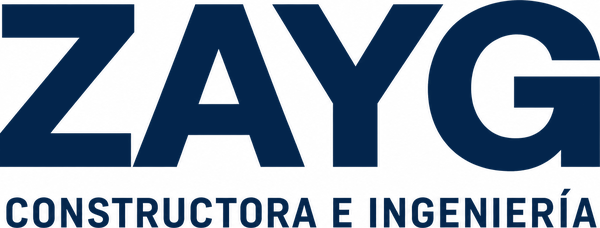
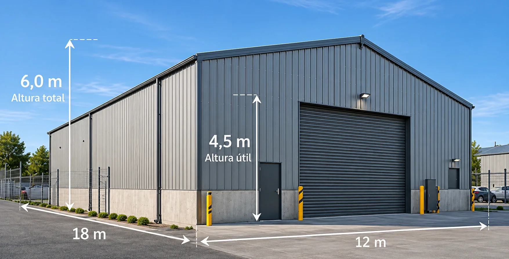
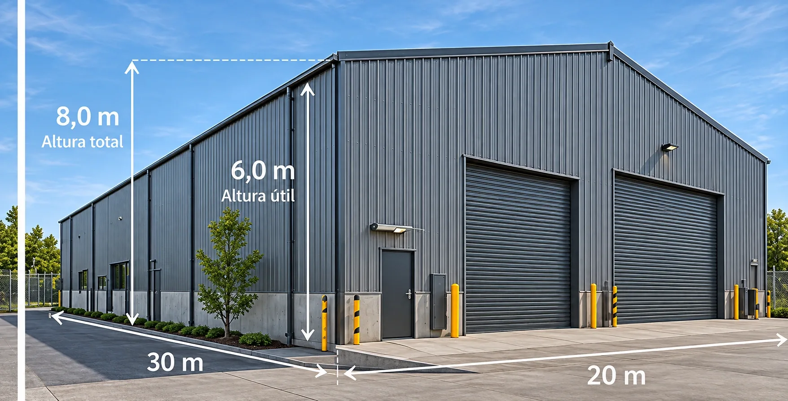
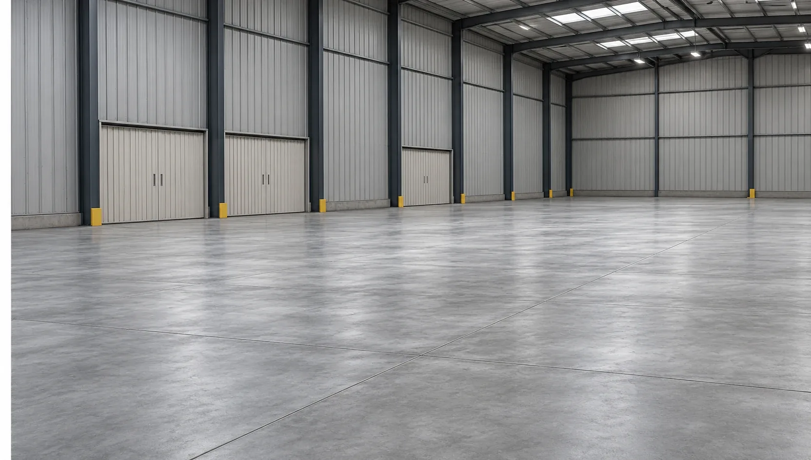
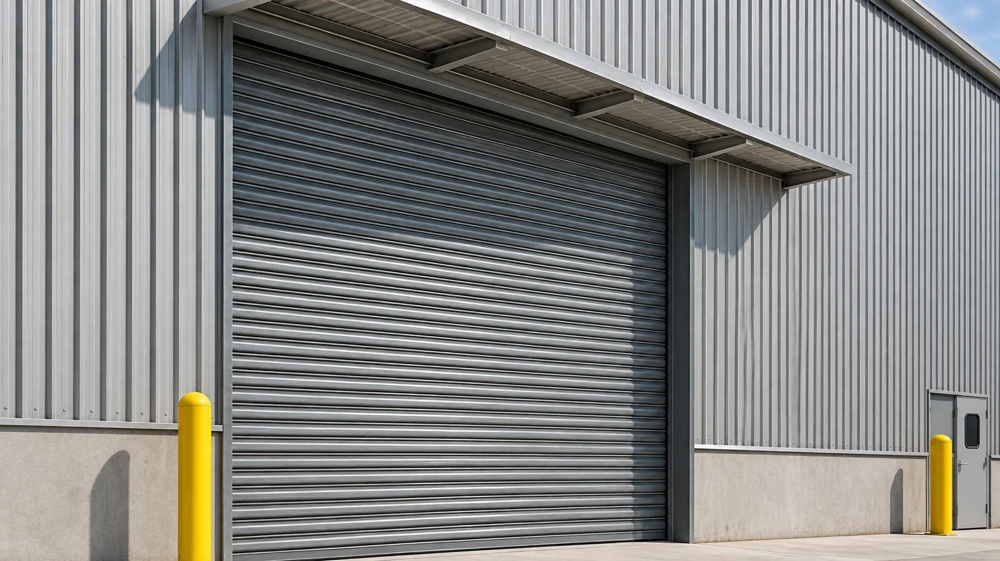

Llave en mano
Recibes el galpón listo para operar
Obra gruesa, cerramientos, portones, radier y habilitación eléctrica en un solo contrato.


Consultar proyecto↗Galpones de acero para empresas medianas
Ingeniería, montaje y habilitación a tu medida. Un solo equipo responsable desde el cálculo estructural hasta el día en que empiezas a operar.
00 / Enfoque
Diseñamos, calculamos y levantamos galpones de acero para empresas que necesitan crecer sin detener su operación. Una obra limpia, plazos que se cumplen y una estructura pensada para durar, ampliarse y reutilizarse.
01 / Ventajas
Un galpón es una inversión de largo plazo. Lo tratamos así: con ingeniería propia, materiales trazables y un solo interlocutor durante todo el proyecto.
Obra gruesa, cerramientos, portones, radier y habilitación eléctrica en un solo contrato.
Cálculo estructural y planos hechos por nuestro equipo, adaptados a tu terreno, tu uso y la normativa chilena.
Carta Gantt desde el inicio y avances semanales. Sabes en qué etapa está tu obra en todo momento.
Estructuras desmontables y ampliables: el acero se recicla y tu galpón crece contigo sin demoler.
Partimos de modelos base probados y los ajustamos: luces, alturas, accesos, oficinas y mezanines.
Protocolos, supervisión permanente y faenas ordenadas para que tu equipo siga trabajando tranquilo.
1equipo
Desde la primera visita a terreno hasta la entrega y la postventa. Sin subcontratos sueltos ni pasarse la pelota.
02 / Modelos base



Modelo 450 · Bodega y taller
03 / Cómo funciona
Vamos a tu terreno, levantamos necesidades de uso, accesos y servicios. Sales con una propuesta técnica clara.
Cálculo estructural, planos de arquitectura y especialidades. Te acompañamos en la tramitación de permisos.

Movimiento de tierra, fundaciones y radier industrial con el espesor y la terminación que tu operación necesita.

Fabricación y montaje del acero, cubiertas y revestimientos con supervisión permanente y protocolos de seguridad.
Portones, cierres, electricidad, iluminación, oficinas y mezanines. Todo lo que tu operación necesita para partir.
Recorremos la obra contigo y te entregamos el galpón listo para operar, con su documentación y soporte de postventa.
04 / En obra
Así se ve una obra ZAYG: orden, seguridad y avances que puedes comprobar. Planos que se convierten en acero en pocas semanas.
05 / Servicios
Proyecto completo, de la ingeniería a la entrega.
↗Pisos de alta resistencia, nivelados y con juntas de dilatación.
↗Seguridad y orden para tu recinto, con accesos vehiculares.
↗Enrollables y de corredera, manuales o motorizados.
↗
Packings, bodegas agrícolas y ampliación de galpones existentes.
↗Aplicaciones

06 / Sostenibilidad
07 / Clientes
Testimonios de ejemplo · se reemplazarán por reales
“Necesitábamos ampliar la bodega sin parar el despacho. Planificaron el montaje por etapas y nunca tuvimos que cerrar.”
“Lo que más valoro es tener un solo responsable. Ingeniería, permisos y obra los vimos con la misma persona de principio a fin.”
“El galpón para el packing quedó listo antes de la temporada. Los reportes semanales con fotos nos dieron mucha tranquilidad.”
08 / Preguntas frecuentes
Depende del tamaño, el terreno y los permisos. En la visita inicial te entregamos una carta Gantt con cada etapa, para que sepas desde el primer día cuándo vas a poder operar.
Sí. Preparamos los planos y la documentación técnica y te acompañamos en la tramitación ante la Dirección de Obras de tu comuna.
Por supuesto. Los modelos de 216, 450 y 600 m² son un punto de partida. Ajustamos luces, largo, alturas, portones, oficinas y mezanines según tu operación.
Ingeniería, fundaciones, radier, estructura, cubierta, revestimientos, portones y la habilitación que acordemos (electricidad, iluminación, oficinas, cierres). Recibes el galpón listo para usar.
Nuestra base está en Antofagasta y evaluamos proyectos en otras regiones del país. Cuéntanos dónde está tu terreno y te confirmamos la cobertura y la logística.
Sí. Revisamos la estructura existente, calculamos la ampliación y la ejecutamos por etapas para no detener tu operación.
09 / Contacto
Te respondemos en un día hábil con los próximos pasos y, si corresponde, agendamos una visita a tu terreno.